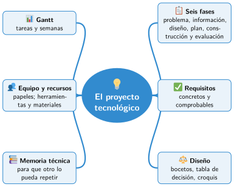

Bloque IV · Robótica y proyectos
UD11 El proyecto tecnológico
Sesiones
- Sesión 11.1 Las fases de un proyecto
- Sesión 11.2 Del problema al diseño
- Sesión 11.3 Planificar en el tiempo
- Sesión 11.4 El equipo y los recursos
- Sesión 11.5 La memoria técnica
Al terminar la unidad
- 🛠️ Práctica con las herramientas
- 📝 Repaso de la unidad
- ✅ Autoevaluación
- 🎯 Situaciones de aprendizaje del bloque
Mapa mental de la unidad

✏️ Repasa la unidad con el mapa: tapa una rama y explica en voz alta lo que pone.